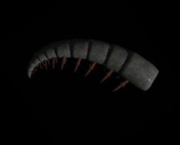

|
|
Historical background - Part 1
A brief history of anomalocarid studies
and reconstructions:
In 1892 Whiteaves described a spine-bearing
segmented fossil from the Mt Stephen trilobite beds in the Canadian Rockies
as the abdomen and tail of a phyllopod crustacean. He called it Anomalocaris
canadensis, noting in its generic name that it was an "anomalous shrimp,"
since it showed no sign of a gut, and its ventral, spine-like "appendages"
were unsegmented. Subsequently, this and other parts of what we now call
Anomalocaris and Laggania have been variously described
as a jellyfish, a sea cucumber, a polychaete worm, a composite of a jellyfish
and sponge (Conway Morris 1978), or have been attached to various other arthropods,
real or conjectural (e.g., Henricksen 1928, Briggs 1979).
Isolated anterior appendages
of Anomalocaris were initially interpreted as the bodies of shrimp.

|
Peytoia (the mouth
of Anomalocaris) was named and described by Walcott (1911) as a sort
of jellyfish.
|
Laggania was interpreted
initially as a sea cucumber.
|
Meanwhile, in 1928, an
incorrect "head" for Anomalocaris was proposed via the carapace of
a crustacean called Tuzoia.
|
Charles D. Walcott collected complete specimens
of Anomalocaris nathorsti [now Laggania cambria] prior to 1917,
and the Geological Survey of Canada collected a nearly complete specimen of
Anomalocaris canadensis in 1967. These were among many Burgess
specimens that received little attention until the advent of the 1980s. This
was a time of major revelation on the true nature of Anomalocaris...
Continue with
the story of Anomalocaris...
|